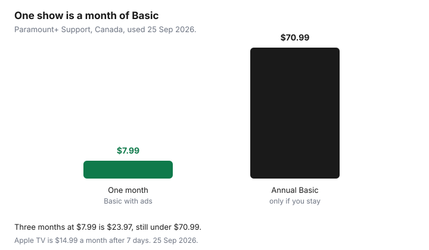

Subscriptions · Canada
Paramount+ and Apple TV+ in Canada: Niche Streamers Worth a Month—Not a Year
A single show is how a niche streamer becomes a permanent bill. You join Paramount+ for one series, or Apple TV for one season, and the renewal outlives the finale. The catalogue can be worth a month. It is rarely worth an unexamined year. This page is the billing and the exit. It is not a reason to add either logo to the always-on stack.
Paramount+ Support’s price table, used 25 Sep 2026, lists Canada in CAD: Basic with Ads $7.99 a month or $70.99 a year, Standard $11.99 a month or $106.99 a year, Premium $15.99 a month or $142.99 a year. Apple’s Canada TV page, used the same day, offers 7 days free, then $14.99 a month. Apple One on apple.com/ca is a different product: Individual $22.95, Family $30.95, Premier $46.95 a month. The always-on choice among Netflix, Disney+, and Crave is the rotation guide. These two stay in the visitor slot.
Disclosure: This page has no natural affiliate offer. Education only. We do not claim a Paramount+, Apple, or Amazon partnership. Read the CAD price on the screen you are about to pay. A launch-price article from a prior year is not today’s channel price.
Key takeaways
- One named title justifies one paid month. Basic Paramount+ at $7.99 is that month. A year at $70.99 is nine extra months you have not justified.
- Apple TV at $14.99 a month, after the 7-day trial, is the same test. Apple One at $22.95 or more is a bundle of other Apple services. Do not buy it for one show.
- Amazon Channels and the App Store are different billers. Cancel where the receipt says you were charged.
- Sports and live add-ons are seasonal. They do not promote a niche app into a forever plan.
- Log the titles you finished. When the list stops growing, leave.
When a niche catalogue justifies one paid month
Write the title down before you subscribe. “The season that drops on Friday” is a month. “We might find something” is how the annual button wins. Paramount+ Basic with Ads is $7.99 for that month, one stream at a time, HD on supported devices. Standard is $11.99 and two streams. Premium is $15.99, four streams, and select titles in 4K, HDR, or Dolby on supported devices. If one person is going to watch one show, Basic is the month. Premium is a household that will actually use four streams of that catalogue, which is a high bar for a secondary app.
Apple TV is one ad-free plan at $14.99 a month on the Canada page, not a ladder of tiers. The trial is 7 days. Apple’s subscription help, published 14 Sep 2026, says to cancel a trial at least 24 hours before it ends if you do not want to pay. A weekend of one show fits inside the trial if you cancel in time. If you need longer than seven days, pay the month, finish the season, and cancel before the next month. A hardware offer that includes a few free months is still a subscription at the end of those months. Put the end date on the calendar the day you redeem it.

Bundle paths (Amazon channels, Apple One) vs standalone CAD pricing
Standalone is the price above, billed by Paramount+ or by Apple. A bundle hides the same service inside a larger bill. Amazon Prime Video channels can include Paramount+ and, at launch, Apple TV as an add-on. The channel is not included with Prime. Prime itself is $9.99 a month or $99 a year, plus tax, on the fee page used 24 Sep 2026. That fee is the Prime guide. The channel has its own price on the Prime Video page the day you subscribe. Older press lines, including a Canada announcement that quoted Apple TV at $12.99 through Prime Video, are not a promise that the add-on still costs that. Read the channel card. If it is not cheaper than $14.99, or not cheaper than the Paramount+ tier you need, the channel is only a convenience. Cancel it in Amazon when the month is over, or Amazon will renew it.
Apple One is the other bundle. Individual at $22.95, Family at $30.95, and Premier at $46.95, on apple.com/ca used 25 Sep 2026, wrap Apple TV with other Apple services and iCloud storage. It is a bargain only if you already pay for those other services and the sum of their separate prices is higher. It is a bad trade if you wanted one season of television. Family and Premier also rose in Apple’s July 2026 Canada change, as reported when the site prices moved. Do not add seats you will not use in order to “save” on a show. Rogers can include Apple TV in some packages and can pause a standalone Apple TV plan. Rogers does not replace Apple One. That rule is on the Disney+ and Rogers guide, because the same terms page covers both.
| Plan | Month | Year on the price table | One month as a share of the year price |
|---|---|---|---|
| Paramount+ Basic with Ads | $7.99 | $70.99 | One month is about 11 percent of the annual price. Three months at $7.99 is $23.97, still under $70.99. |
| Paramount+ Standard | $11.99 | $106.99 | Three months is $35.97. Annual assumes a year of two-stream use. |
| Paramount+ Premium | $15.99 | $142.99 | A 4K month is $15.99, not a reason to prepay $142.99. |
| Apple TV | $14.99 after 7 days free | Compare 12 × $14.99 = $179.88 with any annual price on your screen | One finished season should fit in a month or in the trial. |
| Apple One Individual | $22.95 | Monthly bundle | Only if the other included services are ones you already pay for. |
Cancel before renewal; watch App Store vs direct billing
Direct Paramount+ is cancelled in the Paramount+ account. Direct Apple TV is cancelled in Apple subscriptions: Settings, your name, Subscriptions, at least 24 hours before a trial or a renewal you do not want. If you subscribed inside an app, the receipt decides. App Store and Google Play do not cancel when you delete the app. An Amazon channel is cancelled under Amazon subscriptions, not inside the Paramount+ or Apple TV app. Roku, if that is the receipt, is the Roku account. The trial checklist is the day-zero habit: screenshot the biller before the show starts, so you are not guessing on the last evening.
Cancel the day you finish, not the day the charge is about to hit. You keep access until the period ends. There is no prize for staying until the final hour, and the final hour is when the 24-hour Apple rule gets missed. Save the confirmation next to the title you watched, so the next season has a start date instead of a zombie renewal.
Sports and live add-ons that change the math seasonally
Apple TV’s Canada page includes Friday Night Baseball in season, and it describes Major League Soccer streaming starting in 2026. Those are reasons to be subscribed during the weeks you will watch, and they are not reasons to keep $14.99 going in a month with no match you care about. Formula 1 on that page is described as a U.S. offer. Do not pay a Canadian subscription for a feed the page says is elsewhere. Paramount+ live sports, if a season you follow is actually on that plan, get the same treatment: one month or the length of the series, then cancel. A TSN or other sports add-on stacked on top is a separate CAD price. Disney+’s Canada help table includes TSN bundles from the low thirties a month. That is a sports bill, not a “while we have Paramount+” extra. Price it on its own row.
Rogers’ streaming terms say a direct Paramount+ plan is not paused when you activate Paramount+ through Rogers. You cancel the direct plan yourself or you pay twice. That is the opposite of the Disney+ tier-matching pause. If a wireless or TV package just added Paramount+, open the old account the same day.
Do not let niche streamers become always-on defaults
The always-on service is the one the household opened every week last month. For many homes that is Netflix, on a tier you chose on purpose, or Crave, or nothing. Paramount+ and Apple TV fail that test most months. Leaving them on “so the kids have another icon” is how a $7.99 habit and a $14.99 habit become $275.76 a year before tax, on top of the service you actually watch. The rotation cap is three paid video streamers for no more than 60 days. A niche app counts as one of the three.
When the visitor month ends, the icon can stay on the device. The subscription cannot. Free tiers, library apps, and the shows already inside the always-on plan cover the Tuesday night. If you miss the niche app, you will notice within a month, and a new month costs $7.99 or $14.99. That is the price of the option. The year was the price of not deciding.
Log titles you finished so you know when to leave
A note on the phone is enough. Date, service, title, finished or abandoned. Three finished titles in a month means the month was worth it and the next month needs a new title or a cancel. Zero finished titles means the renewal is a no. An abandoned title is a no as well. You do not owe the rest of a season you are not watching. This log is also how you stop rejoining for a show you already finished and forgot.
Put the renewal beside the log. Paramount+ annual at $70.99 saves money against twelve months at $7.99 ($95.88) only when the log shows you were in the app across the year. If the log shows two titles, you wanted about $16 of Basic, not $70.99. Cancel, file the confirmation, and let the next title start a new month. The audit sheet gets one row, not a permanent seat.
Sources & date stamps
- Paramount+ Support, “How much does Paramount+ cost?”, used 25 Sep 2026: Canada Basic with Ads $7.99 a month or $70.99 a year. Standard $11.99 or $106.99. Premium $15.99 or $142.99. Device article updated 20 Jan 2026: Basic one stream, Standard two, Premium four. Premium includes select 4K, HDR, or Dolby on supported devices.
- tv.apple.com/ca, used 25 Sep 2026: 7 days free, then $14.99 a month. Apple One on apple.com/ca: Individual $22.95, Family $30.95, Premier $46.95 a month.
- Apple Support (Canada), subscriptions, published 14 Sep 2026: cancel at least 24 hours before a trial ends. Settings, your name, Subscriptions.
- Rogers streaming terms as of 27 Aug 2025: a direct Paramount+ subscription is not paused when you add Rogers. Cancel it or pay both. Prime fee page used 24 Sep 2026: $9.99 a month or $99 a year, plus tax. Channel add-on prices change. Do not reuse an old $12.99 Prime Video launch line as today’s price.
- Twelve times Basic is $95.88. Three times Basic is $23.97. Twelve times Apple TV is $179.88. Before tax.
Frequently asked questions
Is Paramount+ worth a year in Canada?
Only if you will use it in most months. Basic is $7.99 a month or $70.99 a year on Paramount+ Support, used 25 Sep 2026. Three months is $23.97. The annual price assumes a year, not one show.
How much is Apple TV in Canada?
Apple’s Canada TV page, used 25 Sep 2026, shows 7 days free, then $14.99 a month. Apple One starts at $22.95 a month and includes other services. Buy Apple One only if you already want those services.
I subscribed through Amazon. Where do I cancel?
Cancel the channel in Amazon subscriptions. Cancelling inside the Paramount+ or Apple TV app does not stop an Amazon charge. Prime membership at $9.99 or $99 is a separate switch.
Does Rogers pause the Paramount+ plan I already had?
No. Rogers’ streaming terms say you keep paying Paramount+ directly unless you cancel it. Disney+ can pause when the tiers match. Paramount+ does not get that rule.
How do I know it is time to leave?
If the log of finished titles has not grown, cancel. A niche app is a visitor. The always-on service is the one you opened every week last month.